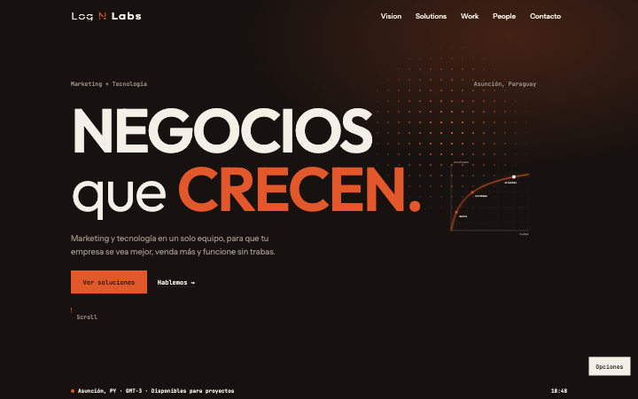
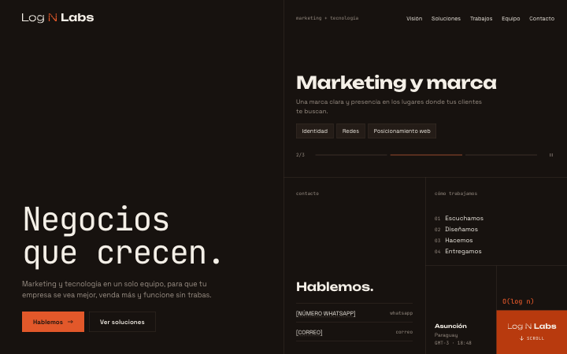
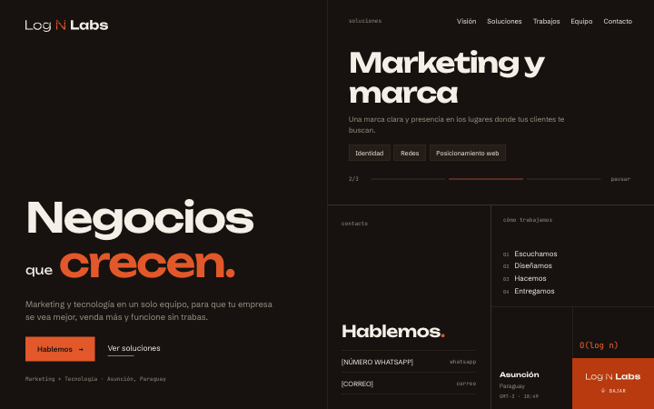
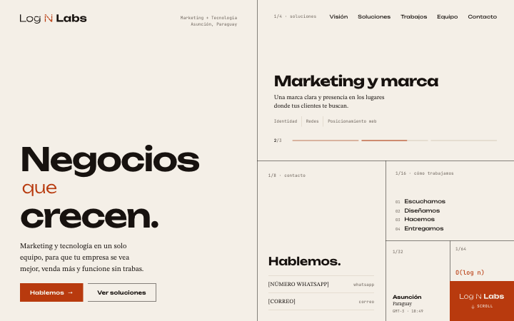
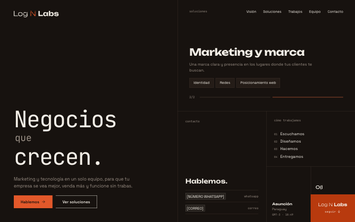
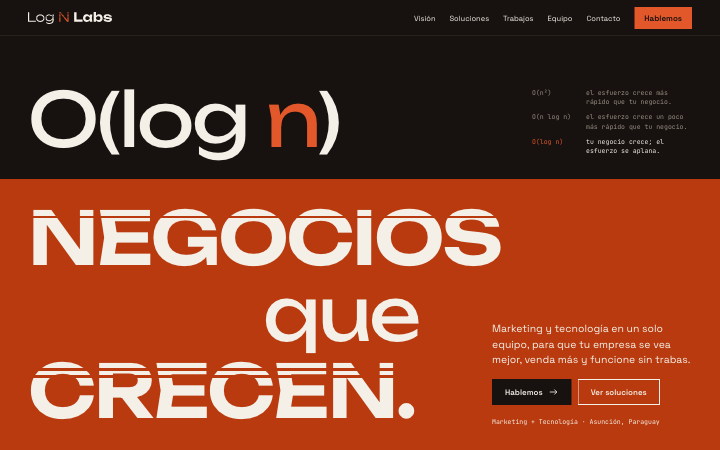

Seis maneras de cortar el mismo problema a la mitad.
Todas usan el mismo contenido: que no se te escape ninguna venta. La v0 es el diseño del socio; de la v1 a la v5, cada una se anima un paso más que la anterior. Abre cada una en pantalla completa y pruébala también en el celular.
-
v0
Sociodiseño original del socio
El diseño de referencia: el problema, servicios, para quién, equipo y el formulario que arma el mensaje solo.

-
v1
Precisofiel · oscuro
El hero de los seis cortes, hecho con máxima precisión: escala tipográfica, ritmo y tiempos de animación afinados.

-
v2
Afiladotipográfico · oscuro
La tipografía manda. Los nombres de servicio se cortan al pasar el mouse y una sección entera va en óxido.

-
v3
Editorialrevista técnica · claro
Una publicación de ingeniería: grilla asimétrica, fracciones como numeración y la curva como figura anotada.

-
v4
Inmersivoscroll como algoritmo · oscuro
Bajar es buscar: cada sección es el siguiente corte y contacto es la celda encontrada. Incluye una búsqueda binaria interactiva.

-
v5
Radicaltitulares cortados · campos de óxido
La regla del logo (cortes a ½, ¼ y ⅛) aplicada a la tipografía gigante, con el O(n²) → O(log n) tipeado de entrada.

La v0 también tiene su landing de software: v0-socio/tecnologia.html →